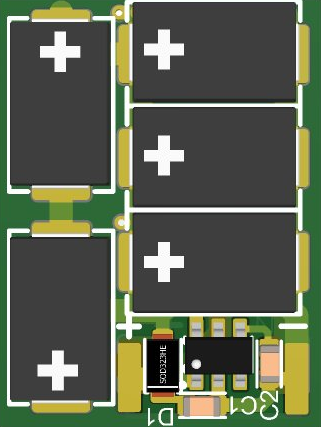
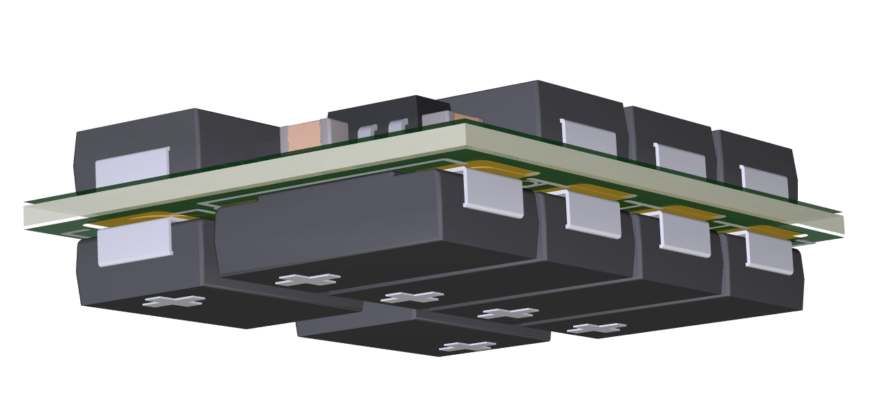

Die NXT StayOn is 'n hoëgehalte DCC-energiebuffer-module wat ontwerp is om die irriterende stilstaan te elimineer wat plaasvind wanneer 'n lokomotief kontak met die spoor verloor — op vuil spoor, oor onbekragtigde wisselhartstukke, of tydens enige kort kragonderbreking.
Dit werk deur energie in 'n bank van kondensatore te stoor en dit onmiddellik vry te stel om u lokomotief se decoder en motor deur daardie onderbrekings aan die gang te hou. Die resultaat is vloeiende, ononderbroke werking op enige DCC-baan, ongeag die spoor- of wisselkondisie.
Die NXT StayOn is beskikbaar in twee weergawes: StayOn-H0 vir H0-skaal en StayOn-N vir N-skaal. Beide beskik oor 'n hardeware sagte-aanvangstrap met die Texas Instruments TPS22810 laaisskakelaar-IC, wat instroomstroom tydens kondensatorlading beperk en booster-afskakelings voorkom. Beide weergawes handhaaf volle decoder-programmeerbaarheid te alle tye.
Elke bord is beskikbaar in verskeie vooraf-geassembleerde konfigurasies — Vol (beide kante bestyg, 5.0 mm hoog) of Slank (slegs bo-kant bestyg, 3.0 mm hoog) — sodat u die regte passing vir u lokomotief kan kies sonder enige wysiging. Sien Afdeling 5 vir die volledige reeks.
Ontwerp en geassembleer in Suid-Afrika volgens die hoogste standaarde, lewer die NXT StayOn professionele werkverrigting teen 'n prys wat sin maak vir elke modelbouers.




Die NXT StayOn verbind met u DCC-decoder via twee soldeerblaadjies op die bord, gemerk + (positief) en − (grond). Hierdie blaadjies aanvaar fyn geëmaljeerde koperdraad of standaard decoder-voerdraad. Identifiseer voor die begin die gepaste verbindingspunt op u decoder — die meeste moderne dekoders bied toegewyde kondensator- of energiebuffer-blaadjies. Sien Afdeling 6 vir decoder-spesifieke leiding.
Verseker dat u DCC-stelsel volledig afgeskakel is voor die begin. Soldeer of verbind nooit drade terwyl die spoor bekragtig is nie. As u stelsel 'n afsonderlike programmeerspoor het, skakel dit ook af.
Verifieer voor soldeer dat die model wat u gekoop het, in die beskikbare spasie in u lokomotief pas. Sien Afdeling 5 vir alle modelafmetings. As u onseker is, kontak NXT Level Technology voor die begin — dit is baie makliker om 'n bord te verruil voor enige bedrading gedoen is.
Vind die twee goue soldeerblaadjies op die komponentkant van die bord. Die blaadjie gemerk + is die positiewe verbinding. Die blaadjie gemerk − is grond. Hierdie merke is op die PCB-silkskrif langs elke blaadjie gedruk.
Bring 'n klein hoeveelheid soldeer op elke blaadjie en op die gestropte punte van u verbindingsdraad aan voor samesmelting. Hierdie tegniek — bekend as tinning — verseker 'n skoon, betroubare soldeerverbinding en maak die finale verbinding vinnig en netjies. Hou die bout op elke blaadjie vir hoogstens twee tot drie sekondes. Dit is raadsaam om eers 'n bietjie vloeibare vloeimiddel op die blaadjies en draad aan te bring — dit help die soldeer vloei en gee 'n sterker, skoner verbinding.
Verbind + met + en − met −. Kontroleer polariteit dubbeld voor die bout aan die verbinding raak. Hou drade kort — 30 tot 50mm is gewoonlik voldoende. 'n Skoon verbinding moet blink en glad wees; 'n dowwe of korrelige verbinding dui op koue soldeer — verhit en herlei indien nodig. 'n Bietjie vloeibare vloeimiddel op die verbinding eers is raadsaam — dit help die soldeer vloei en gee 'n sterker, skoner verbinding.
Verbind met die gepaste energiebuffer- of kondensatorblaadjies op u decoder, met noukeurige polariteitsaanpassing. Sien Afdeling 6 vir decoder-spesifieke blaadjieliggings. Kontroleer polariteit 'n laaste keer voor die toepassing van hitte. As u decoder nie toegewyde blaadjies het nie, verbind met die interne GS-toevoer — positief met positief, grond met grond. Soos met die StayOn-blaadjies, is 'n bietjie vloeibare vloeimiddel eers raadsaam — dit help die soldeer vloei en gee 'n sterker, skoner verbinding.
Maak die NXT StayOn op sy plek vas met 'n klein stukkie dubbelkant skuimband of 'n klodder silikoonlym. Verseker dat die module nie tydens gebruik kan beweeg nie en dat dit geen kontak met enige metaalonderdele van die onderstel, motor of dryfwerk maak nie. Lei drade netjies en maak vas met 'n klein kabelbinder of band indien nodig, en hou dit ver van die vliegwiel en motor.
Voor die toemaak van die lokomotief se bak, herstel baankrag en plaas die lokomotief op die spoor met die bak oopgehou of verwyder. Laat dit stadig oor 'n bekende probleemplek soos 'n wisselhart loop. Die lokomotief moet nou glad daaroor beweeg sonder om vas te haak. As alles goed is, maak die bak toe en voer 'n finale toets op die baan uit.
Die NXT StayOn word voorsien in vyf vooraf-geassembleerde konfigurasies. Kies eenvoudig die een wat die beste ooreenstem met die beskikbare spasie binne u lokomotief. Vol borde is op beide kante bestyg (5.0 mm hoog); Slank borde is slegs op die bo-kant bestyg (3.0 mm hoog) op dieselfde 37 mm voetspoor. Die Kompak-bord dra dieselfde 1,100 µF as die Slank, maar op 'n korter 18.6 mm bord (5.0 mm hoog) — vir lokomotiewe waar lengte, eerder as hoogte, die beperking is.
In die algemeen gee meer kapasitansie u lokomotief meer tyd om 'n kragonderbreking te oorbrug. Selfs die konfigurasie met die laagste kapasitansie sal 'n merkbare verbetering op die meeste bane maak.
| Model | Kapasitansie | Hoogte | Bordgrootte | Geskik vir |
|---|---|---|---|---|
| StayOn-H0 Full | 2,300 µF | 5.0 mm | 37.0 × 14.0 mm | Groot H0-lokomotiewe, maksimum energiebuffer-duur |
| StayOn-H0 Slim | 1,100 µF | 3.0 mm | 37.0 × 14.0 mm | Hoogte-beperkte H0-lokomotiewe — selfde voetspoor, laer profiel |
| StayOn-H0 Compact | 1,100 µF | 5.0 mm | 18.6 × 14.0 mm | Kort installasies — die volle 1,100 µF in 'n korter bord |
| Model | Kapasitansie | Hoogte | Bordgrootte | Geskik vir |
|---|---|---|---|---|
| StayOn-N Full | 900 µF | 5.0 mm | 23.5 × 9.5 mm | N-skaal lokomotiewe, maksimum energiebuffer-duur |
| StayOn-N Slim | 400 µF | 3.0 mm | 23.5 × 9.5 mm | Baie nou N-skaal installasies, hoogte-beperkte lokomotiewe |
Die NXT StayOn verbind met die kondensator- of energiebuffer-blaadjies wat op die meeste moderne DCC-dekoders gevind word. Die module self vereis geen CV-programmering nie — dit is volledig passief uit die decoder se oogpunt. Baie dekoders sluit egter interne CV's in wat bepaal hoe lank hulle krag van 'n eksterne bufferkondensator sal trek wanneer die DCC-sein onderbreek word. Om dit korrek in te stel sal die doeltreffendheid van u NXT StayOn aansienlik verbeter.
Die tabel hieronder bied verbindings- en CV-leiding vir die mees algemeen gebruikte dekoders. Raadpleeg altyd u decoder se eie dokumentasie vir volle besonderhede en die mees onlangse CV-inligting.
| Decoder | Verbindingsblaadjies | CV om in te stel | Aanbevole waarde | Notas |
|---|---|---|---|---|
| ZIMO MX6xx / MX8xx | KOND+ / KOND− | CV 131 | 200–255 | Hoër waarde = langer buffertydduur. Begin by 200 en pas aan. |
| ESU LokSound 5 | C+ / C− | CV 113 | 100–200 | Waarde in 10ms-inkremente. 150 (= 1.5 sekondes) is 'n goeie beginpunt. |
| ESU LokPilot 5 | C+ / C− | CV 113 | 100–200 | Dieselfde as LokSound 5. |
| Doehler & Haass (D&H) | + and − pads on decoder body | Not required | — | Verbind direk met die gemerkde blaadjies. Geen CV-aanpassing nodig nie. |
| TCS (Train Control Systems) | KA+ / KA− | Not required | — | Plug-en-speel energiebuffer-blaadjies. Geen CV nodig nie. |
| Digitrax SDxxx series | Internal DC bus pads | Not required | — | Verbind met die interne gelykgerigte GS-toevoerblaadjies. Raadpleeg decoder-dokumentasie vir blaadjieligging. |
| NCE | Internal DC supply pads | Not required | — | Verbind met die gelykgerigte GS-uitset. Raadpleeg decoder-dokumentasie. |
| Lenz Silver / Gold | C+ / C− | CV 113 | 50–150 | Raadpleeg huidige Lenz-dokumentasie vir u spesifieke decoder-weergawe. |
Waarborgsbepalings
NXT Level Technology bied vrywillig 'n 2-jaar waarborg vanaf die datum van aankoop deur die oorspronklike kliënt, vir 'n maksimum van 3 jaar vanaf die einde van reeksproduksie van die produk.
Hierdie waarborg dek gebreke in materiaal en vakmanskap wat aantoonbaar aan foutiewe materiale of vervaardigingsfoute toegeskryf kan word. Ons behou die reg voor om na ons eie goeddunke te herstel, te vervang of die aankoopprys terug te betaal. Geen verdere eise buite hierdie omvang word aanvaar nie.
Hierdie waarborg is slegs geldig wanneer die module streng ooreenkomstig hierdie handleiding geïnstalleer en gebruik is. Die waarborg verval onder enige van die volgende omstandighede:
· Wysiging van die stroombaan of komponente · Poging tot self-herstel · Verkeerde werking · Omgekeerde polariteitsverbinding · Skade veroorsaak deur nalatige behandeling of misbruik · Gebruik buite die beoogde toepassing · Baanspanning wat 20V GS oorskry
Hierdie waarborg beïnvloed nie u statutêre verbruikersregte ingevolge die Suid-Afrikaanse reg (Wet op Verbruikersbeskerming 68 van 2008) nie.
Kontak & Ondersteuning
Wanneer u ondersteuning kontak, het asseblief die volgende gereed: produkname en weergawe (StayOn-H0 of StayOn-N), u decoder-handelsmerk en -model, u DCC-stelsel-handelsmerk en -model, en 'n kort beskrywing van die probleem. Dit sal ons help om u so vinnig as moontlik by te staan.
Tegniese Veranderinge
NXT Level Technology behou die reg voor om tegniese veranderinge en verbeterings aan sy produkte te maak sonder vooraf kennis. Spesifikasies in hierdie handleiding gestel was korrek ten tye van publikasie. Die mees onlangse weergawe van hierdie handleiding is altyd beskikbaar deur die QR-kode op u produk te skandeer.
© 2026 NXT Level Technology · Handleidingweergawe 1.0 · Alle regte voorbehou. Geen deel van hierdie dokument mag sonder die skriftelike toestemming van NXT Level Technology gereproduseer word nie.